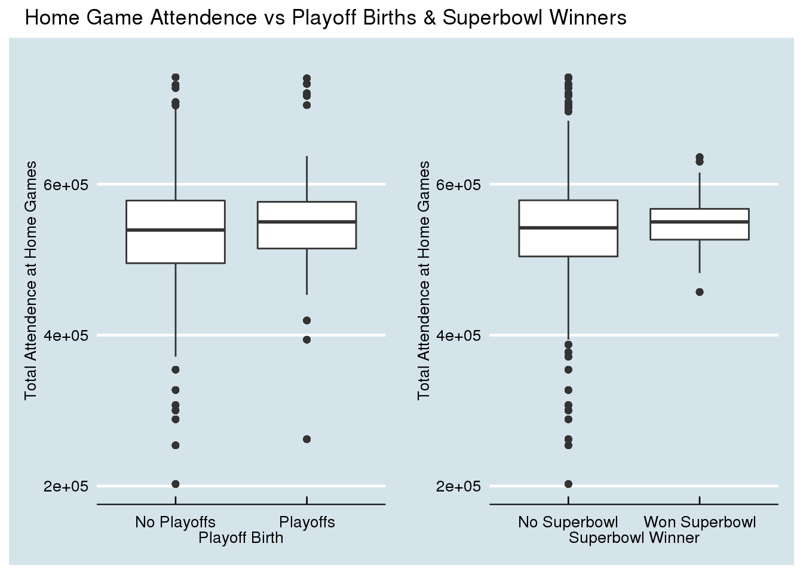
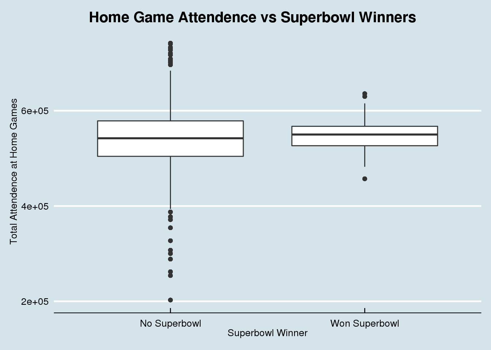
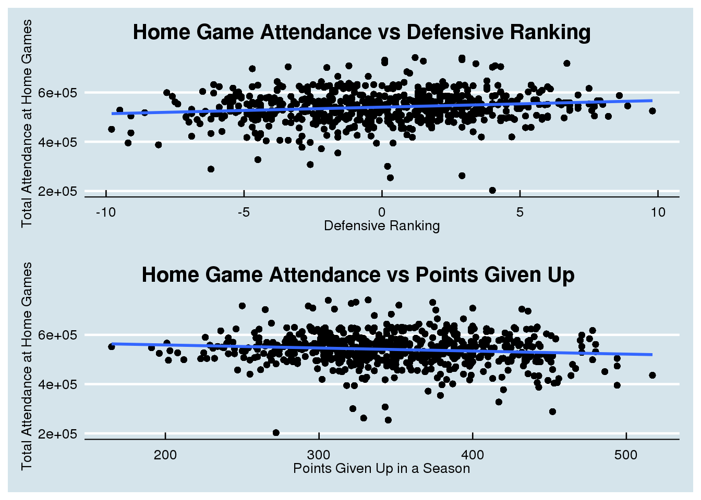
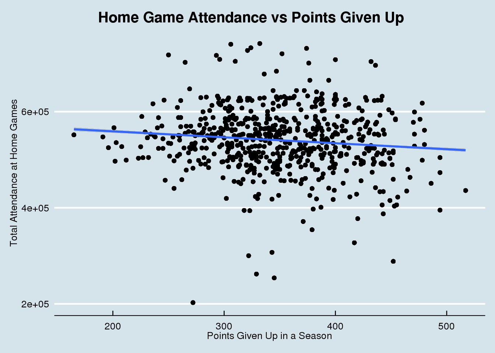

dat <- attendance %>%
left_join(standings, by = c("team", "team_name", "year"))ggplot(dat, aes(x = wins, y = home)) +
geom_point(aes(color = playoffs)) +
geom_smooth(method = "lm") +
labs(x = "Wins", y = "Total Attendence at Home Games") +
ggtitle("Home Game Attendence vs Wins and Playoff Births") +
theme_economist() +
theme(plot.title = element_text(hjust = 0.35))
ggplot(dat, aes(x = playoffs, y = home)) +
geom_boxplot() +
labs(x = "Playoff Birth", y = "Total Attendence at Home Games") +
ggtitle("Home Game Attendence vs Playoff Births") +
theme_economist() +
theme(plot.title = element_text(hjust = 0.35))
ggplot(dat, aes(x = sb_winner, y = home)) +
geom_boxplot() +
labs(x = "Superbowl Winner", y = "Total Attendence at Home Games") +
ggtitle("Home Game Attendence vs Superbowl Winners") +
theme_economist() +
theme(plot.title = element_text(hjust = 0.35))
games <- games %>%
mutate(week = as.numeric(week))## Warning: NAs introduced by coerciongames %>%
left_join(attendance, by = c("home_team_city" = "team", "home_team_name" = "team_name", "year", "week")) %>%
filter(day == c("Sun", "Mon", "Thu")) %>%
group_by(day, time) %>%
summarize(avr_attendance = mean(weekly_attendance, na.rm = TRUE))## Warning in day == c("Sun", "Mon", "Thu"): longer object length is not a multiple
## of shorter object length## # A tibble: 136 x 3
## # Groups: day [3]
## day time avr_attendance
## <chr> <time> <dbl>
## 1 Mon 19:10 70571.
## 2 Mon 19:11 78044.
## 3 Mon 19:13 66860
## 4 Mon 19:20 45910
## 5 Mon 19:26 78127
## 6 Mon 20:10 65477
## 7 Mon 20:15 69070
## 8 Mon 20:30 72581.
## 9 Mon 20:31 69957
## 10 Mon 20:32 69596
## # … with 126 more rowsdat <- attendance %>%
left_join(standings, by = c("team", "team_name", "year"))
ggplot(dat, aes(x = offensive_ranking, y = home)) +
geom_point() +
geom_smooth(method = "lm") +
labs(x = "Offensive Ranking", y = "Total Attendance at Home Games") +
ggtitle("Home Game Attendance vs Offensive Ranking") +
theme_economist()
ggplot(dat, aes(x = points_for, y = home)) +
geom_point() +
geom_smooth(method = "lm") +
labs(x = "Points Scored in a Season", y = "Total Attendance at Home Games") +
ggtitle("Home Game Attendance vs Points Scored") +
theme_economist() +
theme(plot.title = element_text(hjust = 0.35))
ggplot(dat, aes(x = defensive_ranking, y = home)) +
geom_point() +
geom_smooth(method = "lm") +
labs(x = "Defensive Ranking", y = "Total Attendance at Home Games") +
ggtitle("Home Game Attendance vs Defensive Ranking") +
theme_economist() +
theme(plot.title = element_text(hjust = 0.35))ggplot(dat, aes(x = points_against, y = home)) +
geom_point() +
geom_smooth(method = "lm") +
labs(x = "Points Given Up in a Season", y = "Total Attendance at Home Games") +
ggtitle("Home Game Attendance vs Points Given Up") +
theme_economist() +
theme(plot.title = element_text(hjust = 0.35))